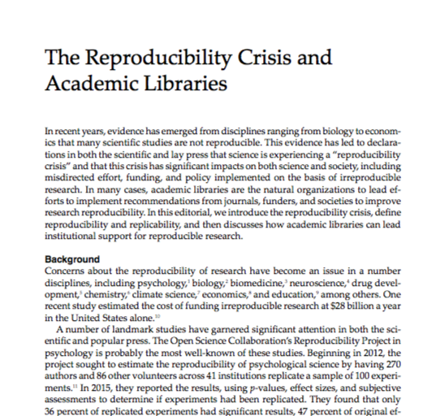

<h2>Reproducibility Guidelines & The Reporting Of Science</h2> <p>Franklin Sayre</p> <p>[fdsayre@umn.edu](fdsayre@umn.edu)</p>
How I learned to stop worrying and love the reproducibility crisis

## Take-aways <p class="fragment fade-up">Reproducibility is, to a large degree, the work of academic librarians.</p> <p class="fragment fade-up">Data, broadly defined, is a major part of reproducibility.</p> <p class="fragment fade-up">Reproducibility is not a component of data management. Data management is a component of reproducibility</p>
### Reproducibility > "the ability of a researcher to duplicate the results of a prior study using the <em style="color:Tomato;">same materials and procedures</em> as were used by the original investigator."
### Replicability > “the ability of a researcher to duplicate the results of a prior study if the same procedures are followed but <em style="color:Tomato;">new data are collected</em>.”
Why Academic Librarians and Reproducibility?
> “First, a finding needs to be repeatable to count as a scientific discovery. Second, <em style="color:Tomato;">research needs to be reported in such a manner that others can reproduce the procedures</em>.” <small>Zwaan, R., Etz, A., Lucas, R., & Donnellan, B. (2017). Making Replication Mainstream.</small>
<h2 style="color:Tomato; vertical-align: top;">The content of science vs the packaging of science</h2>
### Content * Hypothesis * Study Design * Analysis
### Packaging * Was the research published? * Were methods adequately reported? * Was there analysis plan transparency? * Was there code, data, and materials transparency? * Is the published article accessible? * Is the published article discoverable?
Guidelines
### TOP (Transparency and Openness Prom otion) Guidelines
### TOP Guidelines <p><em style="color:Tomato;"> Proper Citation of:</em> data, code, and materials.</p> <p class="fragment fade-up"><em style="color:Tomato;">Data Transparency, Analytic Methods (code) Transparency, Research Materials Transparency:</em> Sharing of underlying data, analytical code, and research materials.</p>
### TOP Guidelines <p><em style="color:Tomato;">Design and analysis transparency:</em> This standard encourages authors to follow explicit guidelines for disclosing key aspects of research design and analysis.</p> <p class="fragment fade-up"><em style="color:Tomato;">Preregistration:</em> both of studies and analysis plans.</p> <p class="fragment fade-up"><em style="color:Tomato;">Replication:</em> This standard relates to the journal's willingness to publish direct replications of studies it previously published.</p>
### American Statistical Association (ASA) Guidelines
### American Statistical Association (ASA) Guidelines <p>Funding small-scale <em style="color:Tomato;">software development, data products, and replications</em> of previous studies.</p> <p class="fragment fade-up">Increasing support for the methodological training, with particular <em style="color:Tomato;">emphasis on the need for data management skills</em>.</p>
### American Statistical Association (ASA) Guidelines <p>Adding <em style="color:Tomato;">code management plans to existing Data Management Plans (DMPs)</em> and asking grant reviewers to explicitly assess DMPs.</p> <p class="fragment fade-up">Creating mandatory undergraduate reproducibility and <em style="color:Tomato;">computational research classes</em>.</p>
### American Statistical Association (ASA) Guidelines <p>Increasing the impact that robust and reliable research practices on grants. </p> <p class="fragment fade-up">Providing increased guidance, more statisticians as part of grant review committees, and the development of standard terminology around reproducibility.</p>
### NIH Guidelines
### Packaging * Was the research published? <em style="color:Tomato;">(Registered Reports, Pre-Registration, Pre-Prints, Traditional Publications)</em> * Were methods adequately reported? <em style="color:Tomato;">(Reporting Guidelines)</em> * Was there analysis plan transparency? <em style="color:Tomato;">(pre-registration)</em>
### Packaging * Was there code, data, and materials transparency? <em style="color:Tomato;">(Disciplinary and institutional repositories, appropriate citation of papers, code, materials, Data Management)</em> * Is the published article accessible? <em style="color:Tomato;">(Open Access, Preprints, Self-Archiving)</em> * Is the published article discoverable? <em style="color:Tomato;">(Indexing, Properly applied metadata)</em>